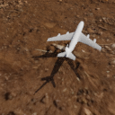
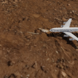

Interpolations along the principal components of camera and scene dynamics latent spaces. These are the video equivalents of Fig. 6 (top), but showing all 8 components.
| Camera Control Latent | |
| Dynamics Control Latent |
Interpolations in the latent space between a starting and an ending view, while varying only the camera control latent (column 1), the dynamics control latent (column 2), or both (column 3). The generation is based on a scene representation encoded from 3 input views (last row).
| Vary camera/dynamics/both | |||
| Starting View | |||
| Ending View |  | ||
| Input Views |  |